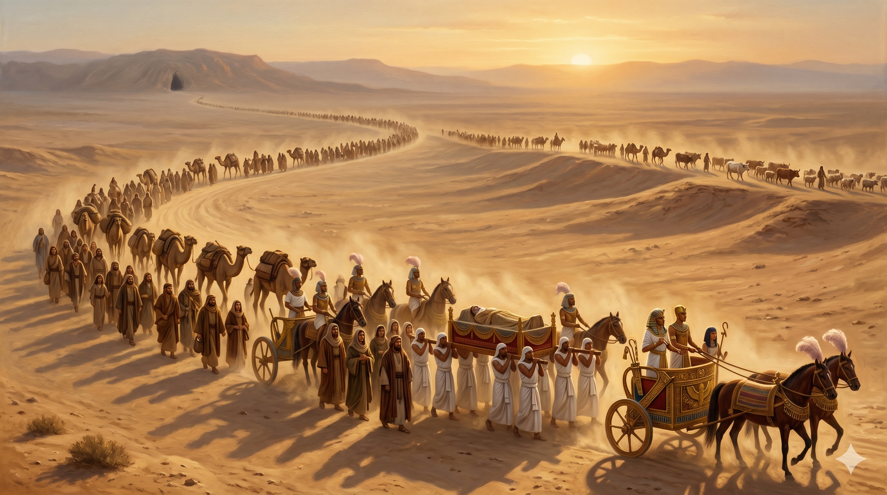

고센 땅 야곱의 침상 곁, 늙은 야곱이 베개를 등에 받치고 한 손을 들어 요셉의 허벅지 아래에 두게 하며 엄숙히 맹세하게 하는 장면. 침상 머리맡에서 몸을 돌려 경배하는 노인의 야윈 손, 창문 너머 보이는 멀리 가나안의 산들 — 풍요 한복판에서 약속의 땅을 바라보는 순례자의 마지막 시선.
이스라엘 족속이 애굽 고센 땅에 거주하며 거기서 생업을 얻어 생육하고 번성하였더라 야곱이 애굽 땅에 십칠 년을 거주하였으니 그의 나이가 백사십칠 세라 이스라엘이 죽을 날이 가까우매 그의 아들 요셉을 불러 그에게 이르되 이제 내가 네게 은혜를 입었거든 청하노니 네 손을 내 허벅지 밑에 넣고 인애와 성실함으로 내게 행하여 애굽에 나를 장사하지 아니하도록 하라 내가 조상들과 함께 눕거든 너는 나를 애굽에서 메어다가 조상의 묘지에 장사하라 … 이스라엘이 침상 머리에서 하나님께 경배하니라 — 창세기 47:27–31
애굽에서의 십칠 년은 야곱에게 인생에서 가장 평안한 시간이었습니다. 사랑하는 아들 요셉의 곁에서, 가족이 다 모인 가운데, 가뭄과 전쟁의 두려움 없이, 좋은 땅 고센에서 생육하고 번성했습니다. 한 사람이 평생 도망치고 씨름하고 잃어버리며 살았다면, 마지막에 그런 풍요를 누리는 것은 너무도 당연한 보상처럼 보입니다. 그러나 야곱은 그 풍요 속에서 한 가지를 잊지 않았습니다 — 자신은 여전히 "나그네"이며, 자신의 진짜 집은 애굽이 아니라는 사실을. 죽을 날이 가까워지자 그는 요셉을 불러, 아브라함이 엘리에셀에게 한 것과 똑같은 방식으로 — 환도뼈 아래에 손을 넣고 — 엄숙한 맹세를 받아냅니다. "애굽에 나를 장사하지 말라."
야곱은 풍요한 애굽 어디에든 호화로운 무덤을 가질 수 있었습니다. 총리 요셉의 아버지로서, 미라의 영광까지 누릴 수 있었습니다. 그러나 그는 한 평짜리 막벨라 굴 — 할아버지 아브라함이 사라를 위해 처음 사 둔 그 가나안의 무덤을 향해 자신의 시신을 보내라고 합니다. 그것은 단순한 향수가 아니라 신앙의 증거였습니다. 그의 시신이 가나안으로 옮겨지는 그 길이 곧 "이 백성이 언젠가 이 약속의 땅으로 돌아가야 한다"는 무언의 설교가 될 것임을 그는 알았습니다. 그래서 본문 마지막에 야곱은 "침상 머리에서 하나님께 경배"합니다. 늙고 약해진 몸으로 침대에 일으켜 앉지도 못한 채 — 단지 침상 머리맡으로 몸을 돌려 — 그는 하나님을 경배합니다. 풍요의 끝자락에서, 약속의 첫 자락을 다시 붙드는 한 노인의 거룩한 자세입니다.

긴 행렬 — 애굽의 마차들과 호위병이 야곱의 관을 가나안 헤브론으로 운구하는 장면. 사막 길을 걷는 낙타들의 그림자와 멀리 보이는 막벨라 굴의 동굴 입구. "이 백성은 언젠가 이리로 돌아온다"는 무언의 예언이 한 사람의 마지막 길로 그려진다.
우리는 인생에서 가장 평안한 시기에 가장 신앙을 잃기 쉽습니다. 가뭄에는 무릎을 꿇지만, 고센 땅에 들어가면 잊습니다. 야곱은 애굽 십칠 년 동안 풍요에 잠식되지 않고 끝까지 "나는 가나안 사람"이라는 정체성을 지켰습니다. 오늘 당신에게도 비교적 평안한 시간이 주어졌다면, 그 평안 속에서 한 가지 자문해 보십시오 — "내가 진짜로 향하는 본향은 어디인가?" 풍요는 본향을 잊게 만드는 가장 부드러운 마취제입니다. 야곱처럼, 풍요 한복판에서도 침상 머리맡으로 몸을 돌려 하나님께 경배하는 한 자세를 잃지 마십시오. 그 작은 자세 하나가 다음 세대 전체의 방향을 잡습니다.
또한 야곱의 마지막 부탁은 자녀에게 무엇을 남길 것인가에 대한 깊은 가르침입니다. 그는 요셉에게 토지를 남기지도, 권력을 물려주지도 않았습니다. 그가 자식에게 남긴 가장 큰 유언은 "나를 가나안에 묻어 달라" — 곧 "너희도 결국 이 땅으로 돌아와야 한다"는 신앙의 방향이었습니다. 부모의 마지막 말은 자녀의 평생 나침반이 됩니다. 오늘 우리도 자녀와 후손에게 무엇을 남길지 정직하게 정리해야 할 때입니다. 통장도, 집문서도 좋지만 — 가장 깊은 유산은 "우리는 어디로 가는 백성인가" 라는 신앙의 방향입니다.
애굽의 풍요는 야곱을 가두지 못했습니다. 그의 시선은 끝까지 가나안을 향했습니다.
당신의 가장 평안한 자리에서 한 번, 침상 머리맡으로 몸을 돌리십시오.
그 한 자세가 당신과 다음 세대의 본향을 가리킵니다.